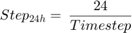
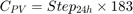
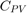

Contents
- Passing Inputs
- Passing first
- Default values setting
- Declare variables
- Time definition
- Energy Systems
- Activate the PV-Panel function
- Activate the Wind Turbine function
- Activate the Electricity Contract
- Activate the Electrolyser and FC
- Create the scenarios for the appliances
- Sustainability Dynamic Index calculation
- Thermal Calculation for the Houses
- Output Variables
- Power production from the building
function [Power_prod, Cons_Tot, Occ, Money,varargout] = HouseSim(varargin)
Passing Inputs
Passing first
dbstop if error BuildSim = varargin{1} - 1; Nbr_Building = varargin{2}; Input_Data = varargin{3}; All_Var = varargin{4}; Time_Sim = varargin{5}; Time_Step = Input_Data{14}; SimDetails = varargin{6}; HouseTitle = varargin{7}; Cont = varargin{8}; App = varargin{9}; EnergyOuput = varargin{10}; SDI = varargin{11};
Index exceeds matrix dimensions.
Error in HouseSim (line 5)
BuildSim = varargin{1} - 1;
Default values setting
Building_Area
if Input_Data{89}<= 0; Input_Data{89}= 39.6 * Input_Data{41} ; end %
Once reached this step, it is necessary to evaluate the data that will be used in the simulation. as it can be seen, this step is carried out only once in the simulation (at the first iteration, myier == 0). In the next section
if Time_Sim.myiter == 0 % Stat4Use = Probability_function; EnergyOuput.PVPower = zeros(Nbr_Building+1, Time_Sim.nbrstep + 1); EnergyOuput.SolarLuminance = zeros(Nbr_Building+1, Time_Sim.nbrstep + 1); EnergyOuput.WTPower = zeros(Nbr_Building+1, Time_Sim.nbrstep + 1); EnergyOuput.Season = zeros(Nbr_Building+1, Time_Sim.nbrstep + 1); EnergyOuput.ElecPower = zeros(Nbr_Building+1, Time_Sim.nbrstep + 1); EnergyOuput.FCPower = zeros(Nbr_Building+1, Time_Sim.nbrstep + 1); EnergyOuput.Cons_Appli_Overall = zeros(Nbr_Building+1, Time_Sim.nbrstep + 1);
Get the starting date as a timeserie. As it can be seen from the first equation, each variable that are building dependent are expressed in a matrix form. Each row represents a different house while each column can be either a reference value or a function of time. In the second case, each column represents one step in the iteration. This rule applies everywhere else in the model.
Time_Sim.StartDate(BuildSim, Time_Sim.myiter + 1) = datenum(Input_Data{7},Input_Data{6},Input_Data{5});
Time_Sim.EndDate(BuildSim, Time_Sim.myiter + 1) = datenum(Input_Data{10},Input_Data{9},Input_Data{8});
stp defines the number of step to complete 1 full day of 24 hours

Where Timestep is the fraction of step in a reference of 1 hour. In this matter, Timeserie = 0.5 is equivalent of having a 30 minutes time step.
switch (Time_Step) case 'Hourly' Time_Sim.stepreal = 1; Time_Sim.stp = 24 / Time_Sim.stepreal; case 'Half Hourly' Time_Sim.stepreal = 0.5; Time_Sim.stp = 24 / Time_Sim.stepreal; end
This step is to evaluate the number of step equivalent to 6 month Sixmtheq in order to recalculate the cleanex index for the PV-Panels. This variable is used much later in section ...

Where  is the equivalent number of steps representing 6 month of simulation. 183 is the number of days in half a year.
Time_Sim.Sixmtheq(BuildSim, 1) = Time_Sim.stp * 183;
Determine the last time of a day. In case the of hourly time step, the last tim of the day is 23h (11pm), if itwould be an minute-to-minute time step, it would be 23h59 (or 11:59pm). This variable is used within the controller and its use is highlighted in the latter section Controller.
Time_Sim.lasthour(BuildSim, 1) = hour(Time_Sim.StartDate(BuildSim, 1) + (Time_Sim.stp - 1)/Time_Sim.stp);
Time_Sim.lastminute(BuildSim, 1) = minute(Time_Sim.StartDate(BuildSim, 1) + (Time_Sim.stp - 1)/Time_Sim.stp);
Time_Sim.lasttime(BuildSim, 1) = Time_Sim.lasthour(BuildSim, 1) + Time_Sim.lastminute(BuildSim, 1) / 60;
In the final section of this module, all checking values are set to 0 as their default value. The Iteration variables are used for each sub module e.g. Scenario, SolRad, and so on. N_occurence are used for the time setting highlighted inthe section below. The last trow of vriables are used by the controller.
Time_Sim.N_occurence(BuildSim, 1) = 1;
Time_Sim.N1_occurence(BuildSim,1) = 1;
Time_Sim.Iteration(BuildSim, 1) = 0;
Time_Sim.Iteration2(BuildSim, 1) = 0;
Time_Sim.Iteration3(BuildSim, 1) = 0;
Time_Sim.Iteration4(BuildSim, 1) = 0;
Time_Sim.Iteration5(BuildSim, 1) = 0;
Time_Sim.Iteration6(BuildSim, 1) = 0;
Time_Sim.Iteration7(BuildSim, 1) = 0;
Time_Sim.currentweek(BuildSim, 1) = 1;
Time_Sim.Comp_Cons(BuildSim,1) = 0;Time_Sim.Delay_time(BuildSim,1) = 0; Time_Sim.hour_1_delay(BuildSim,1) = 0; Time_Sim.Reduce_time(BuildSim,1) = 1;
The weather database collected come from the 1st of January 2000 to Summer 2013. If the simulation starts in the middle of the database, it is a priority to find the starting point of the database (as each of the iteration will increment the starting time offset by 1 step: either an hour or half an hour).
NOTE: STP SHOULD BE REMOVED FOR THE SOLAR RADIATION DATA AS THE SOLAR DATABASE EXIST ONLY FOR EVERY HOUR AND NOT EVERY HALF AN HOUR.
Time_Sim.Timeoffset = Time_Sim.stp*(datenum(year(Time_Sim.StartDate(BuildSim, 1)),month(Time_Sim.StartDate(BuildSim, 1)),day(Time_Sim.StartDate(BuildSim, 1)))-datenum(Time_Sim.YearStartSim,1,1));
Time_Sim.RowForeca = ones(24,1);
end
Declare variables
[Cont,App] = declarevariable(Cont,App,Time_Sim,BuildSim,Nbr_Building,Input_Data);
Time definition
at each iteration, the time is calculated in terms of year, month, day, Weekday name, hour, and minute when relevant. At each iteration, a step is incremented in the time functions and return the corresponding time to the specific step being carried out.
The variable calculated below are the year " timeyear ", the month " timemonth ", the day " timeday ", the hour " Hour ", the minute " Minute ", the time of the day in term of hours plus decimales " timehour ", the starting year of the current year " startyr ", and the day number of the year " timedayyear "
Note: the timeserie embedded in MatLab interpret '1' as a number of day. Thus, in order to increment the right timestep, it is necessary to divide the iteration number by the number of steps that a full day has.
Time_Sim.timeyear = year(Time_Sim.StartDate(BuildSim, 1) + Time_Sim.myiter/Time_Sim.stp) ; Time_Sim.timemonth = month(Time_Sim.StartDate(BuildSim, 1) + Time_Sim.myiter/Time_Sim.stp) ; Time_Sim.timeday = day(Time_Sim.StartDate(BuildSim, 1) + Time_Sim.myiter/Time_Sim.stp) ; Minute = minute(Time_Sim.StartDate(BuildSim, 1) + Time_Sim.myiter/Time_Sim.stp); Hour = hour(Time_Sim.StartDate(BuildSim, 1) + Time_Sim.myiter/Time_Sim.stp) ; Time_Sim.timehour = (Minute / 60) + Hour ; startyr = datenum(Time_Sim.timeyear,1,1) ; currtyr = datenum(Time_Sim.timeyear,Time_Sim.timemonth,Time_Sim.timeday) + 1 ; Time_Sim.timedayyear = currtyr - startyr ;
The particularity of the weekday function is that it starts the week on a Sunday (American standard). Thus, the function myweekday is an adapted version of the original function where the weeks start on a Monday (European standard).
Time_Sim.timeweekday = myweekday(Time_Sim.StartDate(BuildSim, 1) + Time_Sim.myiter/Time_Sim.stp);
The number of weeks elapsed since the beginning of the simulation is calculated and is used for statistical purposes. A week is inceremented everytime it comes back to Monday.
if Time_Sim.timeweekday - myweekday(Time_Sim.StartDate(BuildSim, 1) + (Time_Sim.myiter - 1)/Time_Sim.stp) < 0 Time_Sim.wknbrCNT(BuildSim, 1) = Time_Sim.N_occurence(BuildSim, 1) + 1; Time_Sim.N_occurence(BuildSim, 1) = Time_Sim.N_occurence(BuildSim, 1) + 1; Time_Sim.currentweek(BuildSim, 1) = Time_Sim.wknbrCNT(BuildSim, 1) ; else Time_Sim.wknbrCNT(BuildSim, 1) = Time_Sim.currentweek(BuildSim, 1) ; end Time_Sim.timeweeknbr = Time_Sim.wknbrCNT(BuildSim, 1) ;
Similarly, the number of days elapsed since the beginning of the simulation is calculated and is used for statistical purposes. A day is inceremented everytime the clock passes midnight.
if ((minute(Time_Sim.StartDate(BuildSim, 1) + Time_Sim.myiter/24) / 60) + hour(Time_Sim.StartDate(BuildSim, 1) + Time_Sim.myiter/Time_Sim.stp)) - ((minute(Time_Sim.StartDate(BuildSim, 1) ... + (Time_Sim.myiter - 1)/Time_Sim.stp) / 60) + hour(Time_Sim.StartDate(BuildSim, 1) + (Time_Sim.myiter - 1)/Time_Sim.stp)) < 0 Time_Sim.daynbrCNT(BuildSim,1) = Time_Sim.N1_occurence(BuildSim,1) + 1 ; Time_Sim.N1_occurence(BuildSim,1) = Time_Sim.N1_occurence(BuildSim,1) + 1 ; Time_Sim.currentday(BuildSim,1) = Time_Sim.daynbrCNT(BuildSim,1) ; else Time_Sim.daynbrCNT(BuildSim,1) = Time_Sim.currentday(BuildSim,1) ; end Time_Sim.timedaynbr = Time_Sim.daynbrCNT(BuildSim,1) ;
Energy Systems
This section of the module is successively calling different function from the energy production systems, to the scenario, pricing and controller. Each function are detailed in their section later in this paper.
Activate the PV-Panel function
[EnergyOuput.PVPower(BuildSim, Time_Sim.myiter+1), EnergyOuput.SolarLuminance(BuildSim, Time_Sim.myiter+1),EnergyOuput.SolarLuminancev(BuildSim, Time_Sim.myiter+1),Time_Sim]...
= SolRad(Time_Sim, Input_Data, All_Var, BuildSim, SimDetails);
Time_Sim.Iteration(BuildSim, 1) = 1;
Activate the Wind Turbine function
if Input_Data{16} == 1 [EnergyOuput.WTPower(BuildSim, Time_Sim.myiter+1)] = WindTurbinefunc(Time_Sim, Input_Data, All_Var, BuildSim); Time_Sim.Iteration2(BuildSim, 1) = 1; else EnergyOuput.WTPower(BuildSim, Time_Sim.myiter+1) = 0; end
Activate the Electricity Contract
[EnergyOuput.Season(BuildSim, Time_Sim.myiter+1),EnergyOuput.Price,EnergyOuput.Price_Foreca]= Elec_Contract(Time_Sim, Input_Data, All_Var, BuildSim); Time_Sim.Iteration3(BuildSim, 1) = 1;
Activate the Electrolyser and FC
if Input_Data{18} == 1 [EnergyOuput.ElecPower(BuildSim, Time_Sim.myiter+1),EnergyOuput.FCPower(BuildSim, Time_Sim.myiter+1)] = Electroylzer(Time_Sim.timehour, Time_Sim.myiter); Time_Sim.Iteration4(BuildSim, 1) = 1; else EnergyOuput.FCPower(BuildSim, Time_Sim.myiter+1) = 0; end
Create the scenarios for the appliances
[EnergyOuput.Cons_Appli_Overall(BuildSim, Time_Sim.myiter + 1), EnergyOuput.Occupancy(BuildSim, Time_Sim.myiter + 1),App] = Scenario(Time_Sim,Nbr_Building,Input_Data,BuildSim,All_Var,SimDetails,...
EnergyOuput.SolarLuminancev, HouseTitle,App);
Time_Sim.Iteration5(BuildSim, 1) = 1;
Sustainability Dynamic Index calculation
tic [SDI.SDI,SDI.Emissions_Dwel(BuildSim,:, Time_Sim.myiter + 1),SDI.IndexEmissions] = Sus_Dynamic_Index(Time_Sim,Nbr_Building,All_Var,EnergyOuput.Price, ... EnergyOuput.Cons_Appli_Overall(BuildSim, Time_Sim.myiter + 1),SDI,Input_Data{BuildSim,1} ); toc
Thermal Calculation for the Houses
[EnergyOuput.Thermal_Demand(BuildSim, Time_Sim.myiter + 1)] = Thermal_House(Input_Data, Time_Sim,BuildSim,All_Var); % %% Heat production % % [Power] = Heat_Pump(HP_Power, iter7, Temp_out, Thermal_Demand); % % iter7(Housenbr, 1) = 1;
Input the data and send to the controller
[Time_Sim.Delay_time(BuildSim,1), Time_Sim.hour_1_delay(BuildSim,1), Time_Sim.Reduce_time(BuildSim,1),Cont2] = Controller(Time_Sim,Input_Data,BuildSim,EnergyOuput,Cont,All_Var); Cont = Cont2 ; Time_Sim.Iteration6(BuildSim, 1) = 1; Time_Sim.Reduce_Time2(Time_Sim.myiter + 1) = Time_Sim.Reduce_time(BuildSim,1); % if myiter > 480 && timehour == 0 % [RowForeca(:,size(RowForeca,2)+1)] = Test_Forecast(myiter, Cons_Appli_Overall, timehour); % end % if Time_Sim.myiter == Time_Sim.nbrstep % save('EnergyOuput.mat','EnergyOuput'); % end
Output Variables
Declare Cons_Appli_Overall
Cons_Tot = EnergyOuput.Cons_Appli_Overall(BuildSim, Time_Sim.myiter + 1) ; Occ = EnergyOuput.Occupancy(BuildSim, Time_Sim.myiter + 1) ; Money = EnergyOuput.Price * EnergyOuput.Cons_Appli_Overall(BuildSim, Time_Sim.myiter + 1) ;
Power production from the building
Power_prod = EnergyOuput.FCPower(BuildSim, Time_Sim.myiter+1) + EnergyOuput.PVPower(BuildSim, Time_Sim.myiter+1) + EnergyOuput.WTPower(BuildSim, Time_Sim.myiter +1) ;
varargout{1} = Input_Data ;
varargout{2} = All_Var ;
varargout{3} = Time_Sim ;
varargout{4} = SimDetails ;
varargout{5} = Cont ;
varargout{6} = App ;
varargout{7} = EnergyOuput ;
varargout{8} = SDI ;